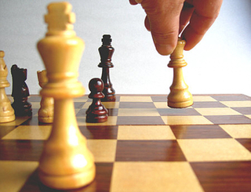

El Ajedrez
El ajedrez es un juego entre dos contrincantes, cada uno dispone de 16 piezas móviles que se colocan sobre un tablero dividido en 64 casillas o escaques. En su versión de competición, está considerado como un deporte aunque en la actualidad tiene claramente una dimensión social, educativa y terapéutica también.
Se juega sobre un tablero cuadriculado de 8×8 casillas (llamadas escaques), alternadas en colores blanco y negro, que constituyen las 64 posibles posiciones de las piezas para el desarrollo del juego. Al principio del juego cada jugador tiene dieciséis piezas: un rey, una dama, dos alfiles, dos caballos, dos torres y ocho peones. Se trata de un juego de estrategia en el que el objetivo es «derrocar» al rey del oponente. Esto se hace amenazando la casilla que ocupa el rey con alguna de las piezas propias sin que el otro jugador pueda proteger a su rey interponiendo una pieza entre su rey y la pieza que lo amenaza, mover su rey a un escaque libre o capturar a la pieza que lo está amenazando, lo que trae como resultado es el jaque mate y el fin de la partida.
Este deporte, tal como se conoce actualmente, surgió en Europa durante el siglo XV, como evolución del juego persa shatranj, que a su vez surgió a partir del más antiguo chaturanga, que se practicaba en la India en el siglo VI. La tradición de organizar competiciones de ajedrez empezó en el siglo XVI. El primer campeonato oficial del mundo de ajedrez se organizó en 1886. El ajedrez está considerado por el Comité Olímpico Internacional como un deporte, y las competiciones internacionales están reguladas por la FIDE. Los jugadores compiten a nivel individual en diferentes torneos, aunque también existen competiciones por equipos, siendo una de las más importantes las Olimpíadas de ajedrez.